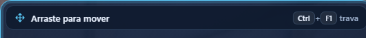
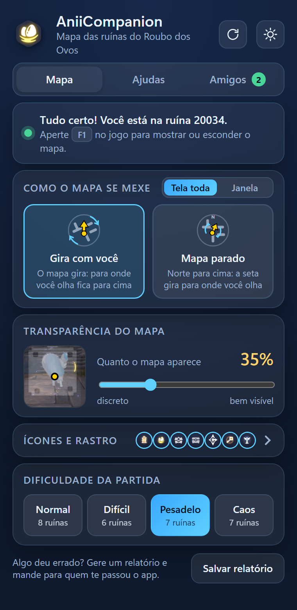
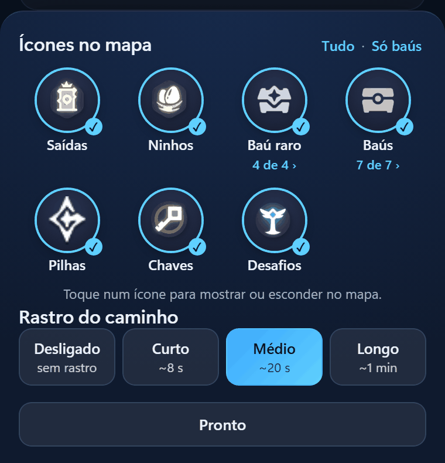
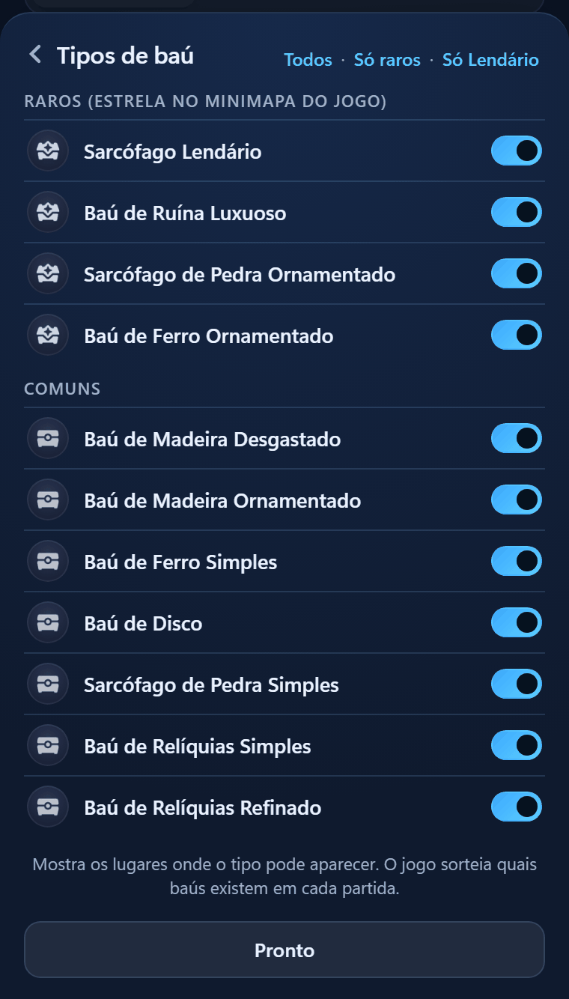

Personalizar o mapa
Tudo o que você muda na janela do app, do tamanho do mapa ao tema.
Aba “Mapa”
Tela toda ou janela pequena
O botão de dois lados no alto do quadro “Como o mapa se mexe”.
- “Tela toda”: o mapa cobre a tela do jogo. Clique e teclado passam direto para o jogo.
- “Janela”: um mapa pequeno num canto, com o santuário inteiro. Você escolhe o tamanho e o lugar.
Como mover a janela do mapa
- DestraveAperte Ctrl + F1 no jogo. Aparece a barra “Arraste para mover”.

- Mova e redimensioneArraste pela barra para mover. Arraste o canto para mudar o tamanho.
- Trave de novoCtrl + F1 outra vez. O clique volta a passar para o jogo, e o app lembra onde você deixou a janela.
Atalhos
| F1 | mostra ou esconde o mapa |
|---|---|
| Ctrl + F1 | trava e destrava a janela do mapa |
| Ctrl + Shift + F1 | reinicia o mapa, veja abaixo |
Com o AniiCompanion aberto, essas teclas são dele e não chegam ao jogo.

Aba “Mapa”
Como o mapa se mexe
No quadro “Como o mapa se mexe”, escolha um dos dois.
- “Gira com você”O mapa gira: para onde você olha fica para cima. É o jeito mais fácil de não se perder.
- “Mapa parado”Norte para cima. A seta é que gira para onde você olha.
Ícones
Ícones e rastro
A linha “Ícones e rastro” abre um painel por baixo.
- Escolha os íconesToque num ícone para mostrar ou esconder no mapa: Saídas, Ninhos de Ovos, Baú Raro, Baús, Pilhas, Salas da Chave e Desafios. “Tudo” liga todos e “Só baús” deixa só os baús.
- Escolha o rastroO rastro amarelo mostra por onde você passou: “Desligado”, “Curto” (cerca de 8 s), “Médio” (20 s) ou “Longo” (1 min).
- Toque em “Pronto”O painel fecha e o mapa usa a sua escolha. Nos baús, o “N de M ›” abre os tipos, na próxima seção.

Ícones
Tipos de baú
Ver só os baús que importam, como o Sarcófago Lendário.

- Abra a folhaNo painel de ícones, toque em “N de M ›” embaixo de “Baú Raro” ou “Baús”.
- Ligue e desligueCada tipo tem uma chave, em dois grupos: “Baús Raros (estrela no minimapa do jogo)” e “Comuns”.
| “Todos” | liga todos os tipos |
|---|---|
| “Só raros” | deixa só os raros |
| “Só Lendário” | deixa só o Sarcófago Lendário |
O jogo sorteia quais baús existem em cada partida. Um anel tracejado marca o lugar que também pode ser outro tipo de baú.
Aba “Mapa”
Opacidade do mapa
Quanto você enxerga do mapa por cima do jogo.
Em “Opacidade do mapa”, arraste a barra de “discreto” a “bem visível”, de 10% a 100%. Ela começa em 35%.
A imagem ao lado da barra mostra, na hora, como o mapa fica sobre uma cena do jogo.
Aba “Mapa”
Dificuldade da partida
Não há o que ajustar: o app descobre sozinho.
Ele lê a meta de moedas do painel do jogo. Se não conseguir ler, o próprio santuário indica a dificuldade: “Normal”, “Difícil”, “Pesadelo” ou “Caos”.
Você a vê no cartão de estado da janela do app (“Tudo certo! Santuário 20034 · Pesadelo”) e numa etiqueta no mapa.
Cabeçalho
Tema claro ou escuro
O botão com sol ou lua, no canto do cabeçalho.
Toque nele para trocar entre claro e escuro. Por padrão o app segue o tema do Windows.
Cabeçalho
Idioma do app
O botão do globo, ao lado do tema.
Na primeira vez, o app pergunta “Em qual idioma você quer o app?” e marca o idioma do Windows. Depois, toque no globo e escolha em “Idioma do app”: “Português” ou “English”.
As telas recarregam no idioma novo. A partida, o mapa e os amigos continuam.
Cabeçalho
Reiniciar o mapa
Quando o mapa aparecer cortado ou parado.
Aperte Ctrl + Shift + F1 no jogo, ou toque em “Reiniciar mapa” no cabeçalho do app. Ninhos, ovos e baús da partida continuam marcados.
Rodapé
Salvar relatório
Algo deu errado? Toque em “Salvar relatório” no rodapé. Um arquivo .zip vai para a pasta Downloads.
Ele leva os registros do app e algumas fotos da tela do jogo. Mande para quem te passou o app. Veja também os problemas comuns.
Aba “Ajudas”
Ligar e desligar as ajudas
Cada aviso da partida tem uma chave na aba “Ajudas”. Todas vêm ligadas. Veja como.